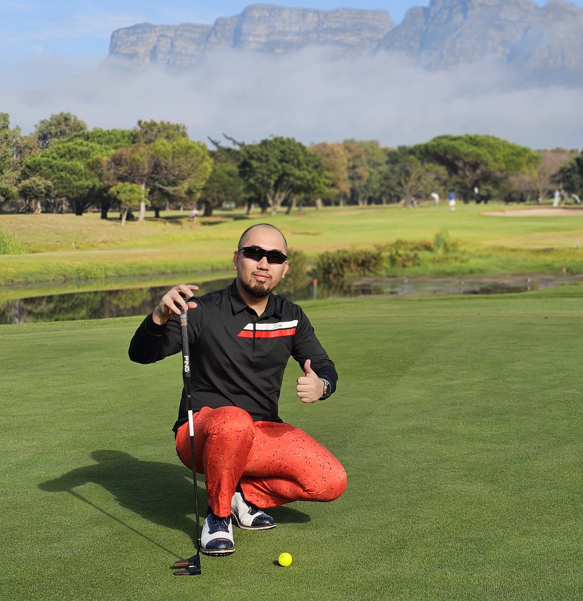
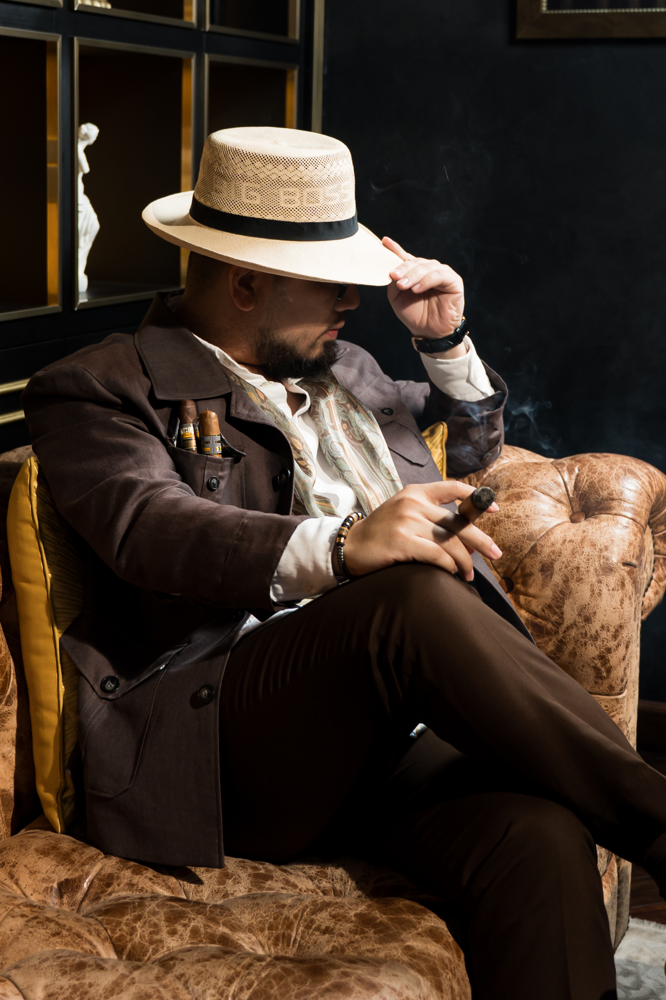

Người kể chuyện không gian sống thượng lưu qua lăng kính chân thực
Hoàng Đức – người sáng lập kênh YouTube “Nhà TO” và hiện là Giám đốc Truyền thông của công ty du
thuyền Vietyacht – tiếp cận và chinh phục giới tinh hoa không chỉ bằng nội dung mà bằng sự thấu cảm
sâu sắc với giá trị sống thượng lưu.
HOÀNG ĐỨC

Với anh Nguyễn Đức Thuận, du thuyền là cánh cửa dẫn đến một phong cách sống đầy cảm hứng.
Gần một thập kỷ đồng hành cùng hai thương hiệu tiên phong Vietyacht và Luxyacht, anh và đội ngũ không chỉ mở
lối cho ngành công nghiệp du thuyền trong nước mà còn từng bước xây dựng một hệ sinh thái dịch vụ toàn diện
và chuyên nghiệp, phù hợp với nhu cầu và gu thẩm mỹ ngày càng tinh tế của tầng lớp thượng lưu Việt.
Với tầm nhìn dài hạn, anh Thuận cùng đội ngũ luôn nỗ lực và khao khát viết nên “hải trình” đưa du thuyền
Việt Nam hòa mình vào dòng chảy của thị trường khu vực và thế giới.
Chào anh Nguyễn Đức Thuận. Trong hành trình gắn bó cùng Vietyacht và Luxyacht, khoảnh khắc
nào là đáng nhớ nhất với anh?
Với tôi, mỗi khoảnh khắc trên hành trình này đều quan trọng, tuy nhiên những điều đầu tiên
thường mang đến ấn tượng sâu sắc nhất. Do đó, khoảnh khắc đáng nhớ nhất là khi chiếc du thuyền của thương
hiệu Jeanneau – do Vietyacht phân phối độc quyền – lần đầu tiên hạ thủy tại Việt Nam vào năm 2017.
Lúc đó, thị trường còn rất mới mẻ, chúng tôi chưa có brochure hay video giới thiệu, chỉ mang theo tập
ảnh để thuyết phục vị khách hàng người Anh – người đã tin tưởng và ký hợp đồng chỉ sau vài buổi gặp gỡ. Chỉ
sau 4 tháng, chiếc thuyền đầu tiên đã cập cảng Việt Nam. Ngày hạ thủy, chúng tôi tổ chức một buổi lễ trang
trọng, kèm theo video giới thiệu ý nghĩa của nghi thức đặt tên – một truyền thống quan trọng trong ngành
hàng hải. Đó là khoảnh khắc ấn tượng nhất đối với tôi, đánh dấu khởi đầu cho hành trình phát triển của
Vietyacht tại Việt Nam.
HĐ
“Việc tiếp cận và quay video trong các căn nhà đẳng cấp là một thử thách lớn,
bởi sự riêng tư của gia chủ – đặc biệt là giới siêu giàu – là điều tối quan trọng”
GRAND HOUR SEASON 5: HOÀNG ĐỨC - NHÀ TOLUXUO.VN
Với vai trò là nhà sáng lập kiêm người dẫn dắt Vietyacht và Luxyacht trong gần 10 năm qua,
anh Thuận đánh giá thế nào về triển vọng của ngành du thuyền Việt Nam trong 5 năm tới?
Tôi tin ngành du thuyền Việt Nam sẽ phát triển rất tốt nếu chúng ta định hướng đúng. Theo
báo cáo của Knight Frank trong năm 2024, Việt Nam là một trong năm quốc gia có tốc độ tăng trưởng người siêu
giàu nhanh nhất châu Á. Bên cạnh đó, Việt Nam sở hữu lợi thế thiên nhiên tuyệt vời với hơn 3.200 km bờ biển,
nhiều vịnh kín và đảo đẹp, tất cả đều là điều kiện lý tưởng hàng đầu thế giới để phát triển ngành du thuyền.
Cùng với đà tăng trưởng kinh tế, tôi tin trong 5 năm tới, thị trường du thuyền Việt Nam sẽ bứt phá,
tiến gần hơn tới các quốc gia trong khu vực như Thái Lan, Singapore nếu chúng ta đi đúng hướng. Mặc dù có
thời điểm phát triển sôi động bị chững lại do Covid và yếu tố kinh tế, nhưng với sự giàu lên nhanh chóng của
người Việt, tôi tin phong cách sống và bộ môn du thuyền sẽ phát triển mạnh mẽ trong những năm tới.
Trong quá trình vận hành, đâu là bài toán khó nhất mà anh phải đối mặt – vấn đề tài chính,
quản lý vận hành, mở rộng thị trường, tiếp cận khách hàng, hay dịch vụ hậu mãi?
Để điều hành một doanh nghiệp, bạn phải giải quyết đồng thời nhiều bài toán này. Tuy nhiên,
theo tôi, khó nhất trong ngành này chính là việc tiếp cận khách hàng. Khách hàng trong lĩnh vực du thuyền
rất đặc thù vì họ là tầng lớp thượng lưu, chỉ chiếm một phần rất nhỏ trong xã hội, và dĩ nhiên tầng lớp
thượng lưu thì thường khó tiếp cận. Do đó, không chỉ đội ngũ kinh doanh mà cả các nhà sáng lập, CEO cũng như
các trưởng bộ phận đều phải trực tiếp tham gia bán hàng, từ những chi tiết nhỏ nhất đến các giao dịch lớn.
Trong quá trình tiếp cận đó, điều quan trọng không chỉ là giới thiệu sản phẩm, mà là làm sao khơi dậy
đúng nhu cầu tiềm ẩn của khách hàng – những người ở một đẳng cấp rất cao, nơi mà cách tiếp cận phải thực sự
tinh tế và được cá nhân hóa. Nhiều khi, họ không mua vì sản phẩm, mà vì niềm tin và cảm hứng đến từ người
bán.

HĐ
“Tôi chỉ muốn truyền tải đúng tinh thần và vẻ đẹp riêng của mỗi không gian một cách
chân thành nhất”
GRAND HOUR SEASON 5: HOÀNG ĐỨC - NHÀ TOLUXUO.VN
Hiện tại, Vietyacht và Luxyacht đang phân phối chính hãng bao nhiêu hãng du thuyền trên thế
giới?
Chúng tôi có Vietyacht và Luxyacht, mỗi công ty phụ trách phân phối các phân khúc khác
nhau. Vietyacht chuyên phân phối du thuyền Pháp, hiện tại đang đại diện cho ba thương hiệu là Jeanneau,
Prestige và Fountaine Pajot. Trong khi đó, Luxyacht là nhà phân phối độc quyền cho ba thương hiệu Ý cao cấp
là Ferretti Yachts, Pershing, Riva.
Ngoài ra, trong tập đoàn Ferretti có tổng cộng bảy thương hiệu. Luxyacht đang độc quyền phân phối ba
thương hiệu và phân phối chính hãng thêm bốn thương hiệu khác bao gồm Custom Line Yachts, Wally Yachts.
Khi làm việc với các đối tác du thuyền quốc tế, chắc hẳn yêu cầu của họ rất khắt khe. Vậy để
ký kết hợp tác với những tập đoàn lớn cần những điều kiện gì đặc biệt? Và yếu tố nào quan trọng nhất để duy
trì mối quan hệ đối tác chiến lược lâu dài?
Quả thật các tiêu chuẩn của họ rất nghiêm ngặt. Ví dụ như hợp đồng độc quyền với Ferretti
dài khoảng 200 trang, và để ký được hợp đồng đó, ngoài việc đánh giá năng lực doanh nghiệp, chúng tôi phải
chuẩn bị rất nhiều hồ sơ, giấy tờ và phải được công chứng bởi lãnh sự. Bởi họ trao toàn quyền cho chúng tôi
tại thị trường Việt Nam nên việc kiểm soát, giám sát tất nhiên sẽ rất kỹ càng.
Bên cạnh đó, hằng năm, chúng tôi phải đáp ứng đầy đủ các điều kiện mà họ đặt ra, như xây dựng thương
hiệu, phát triển thị trường, sử dụng ấn phẩm marketing theo quy chuẩn, và chịu các điều khoản phạt nghiêm
khắc nếu vi phạm.
Để làm việc và duy trì quan hệ với họ đòi hỏi rất nhiều khía cạnh, nhưng chung quy lại sẽ có ba yếu tố
cốt lõi, đó là: Năng lực doanh nghiệp vững mạnh; Kiến thức chuyên sâu về ngành du thuyền; và Khả năng phát
triển thị trường hiệu quả.
Năm 2017, đại diện Jeanneau từng chia sẻ rằng họ chọn Vietyacht làm nhà phân phối độc quyền tại Việt
Nam vì thấy chúng tôi có chung đam mê và tầm nhìn về ngành du thuyền. Jeanneau là thương hiệu lớn của Pháp,
và họ có yêu cầu rất cao để chọn nhà phân phối chính hãng. Dù rằng không phải thương hiệu nào cũng đòi hỏi
tiêu chuẩn khắt khe như vậy, nhưng những thương hiệu lớn mà Vietyacht và Luxyacht đang đại diện đều nằm
trong top 3 thế giới và đều có tiêu chuẩn rất cao.
HĐ
“Tôi chỉ muốn truyền tải đúng tinh thần và vẻ đẹp riêng của mỗi không gian một cách
chân thành nhất”
GRAND HOUR SEASON 5: HOÀNG ĐỨC - NHÀ TOLUXUO.VN
Dịch vụ hậu mãi cũng là một khía cạnh quan trọng không kém trong việc tiếp cận khách hàng.
Hiện tại, Vietyacht đang triển khai như thế nào?
Ngay từ khi xây dựng Vietyacht, chúng tôi đã chú trọng hoạch định nên một hệ sinh thái khép
kín nhằm giải quyết mọi nhu cầu và trăn trở của khách hàng khi tiếp cận và mua du thuyền. Trong hệ sinh thái
đó, nếu khách hàng muốn sở hữu một mẫu du thuyền thanh lịch của Pháp, Vietyacht sẽ là đơn vị đồng hành; còn
nếu khách muốn những mẫu du thuyền sang trọng hơn thuộc phân khúc cao cấp, chúng tôi sẽ có Luxyacht phục vụ.
Với những khách hàng có nhu cầu kết hợp kinh doanh cho thuê du thuyền, Vietyacht Club là lựa chọn hỗ trợ
chuyên biệt.
Về dịch vụ hậu mãi, chúng tôi cung cấp đầy đủ các tiện ích như bến đỗ chuyên nghiệp, dịch vụ thuyền
viên, sửa chữa và bảo dưỡng, cùng các dịch vụ liên quan khác đều do Vietyacht Club đảm nhận. Khi khách hàng
cần các phụ kiện dành cho du thuyền, Vietboat sẽ đáp ứng nhu cầu này. Nếu có yêu cầu xây dựng bến đỗ riêng
hoặc cần tư vấn thiết kế, Vietyacht Marina là đơn vị chuyên trách thực hiện.
Tất cả các dịch vụ và cơ sở hạ tầng trong hệ sinh thái này đều hướng tới một mục tiêu duy nhất, được thể
hiện qua slogan của chúng tôi: “Khách hàng đến với Vietyacht chỉ cần làm hai việc là Pay and Play – trả tiền
và tận hưởng”. Mọi việc khác đã có Vietyacht lo liệu, bởi vì du thuyền không chỉ là phương tiện di chuyển mà
còn là phong cách sống, nếu bị ảnh hưởng bởi nhiều yếu tố khác, trải nghiệm của khách hàng sẽ không còn trọn
vẹn và niềm vui cũng mất đi.
Theo anh Thuận thì đâu là yếu tố quyết định sự phát triển của thị trường du thuyền Việt Nam?
Sự phát triển của thị trường du thuyền Việt Nam không nằm ngoài những quy luật chung của
lĩnh vực kinh tế, nhưng để thị trường này thực sự phát triển thì cần hội tụ một số yếu tố quan trọng.
Đầu tiên là tốc độ phát triển kinh tế của đất nước, cụ thể là sự gia tăng nhanh chóng của giới siêu
giàu – nhóm khách hàng chủ lực của ngành du thuyền. Thứ hai, cần những chính sách và cơ sở pháp lý rõ ràng
để hỗ trợ và tạo điều kiện thuận lợi cho thị trường phát triển. Thứ ba là cơ sở hạ tầng, với việc xây dựng
hệ thống bến du thuyền tiêu chuẩn quốc tế cùng các cơ sở dịch vụ đi kèm được phát triển đầy đủ để đáp ứng
nhu cầu ngày càng cao của khách hàng. Cuối cùng, một yếu tố không thể thiếu là thay đổi nhận thức của thị
trường, các hãng du thuyền và nhà phân phối phải định vị và phổ cập kiến thức về lĩnh vực du thuyền như một
phong cách sống, chứ không phải là thứ gì đó quá xa xỉ.
Chính sự kết hợp hài hòa của những yếu tố này sẽ quyết định sự phát triển bền vững và mạnh mẽ của thị
trường du thuyền tại Việt Nam.
HĐ
“Tôi chỉ muốn truyền tải đúng tinh thần và vẻ đẹp riêng của mỗi không gian một cách
chân thành nhất”
GRAND HOUR SEASON 5: HOÀNG ĐỨC - NHÀ TOLUXUO.VN
Anh nhìn nhận vị trí và tốc độ phát triển của ngành du thuyền Việt Nam đang ở đâu trong bản
đồ du thuyền thế giới, hoặc gần hơn là so sánh với Singapore và Thái Lan?
Thị trường du thuyền Việt Nam thực ra mới phát triển được khoảng 7–8 năm gần đây, trong khi
Singapore hay Thái Lan với nguồn lực nội sinh đã phát triển ngành này từ vài chục năm trước. Nếu so sánh ở
khu vực châu Á thì Singapore đang đứng vị trí số 1, Thái Lan đứng thứ 2, còn Việt Nam hiện đang đứng sau cả
Malaysia và Indonesia.
Tuy nhiên, Việt Nam có lợi thế là thị trường mới, nên có thể học hỏi rất nhiều kinh nghiệm từ các thị
trường gần như Singapore, Thái Lan, Hồng Kông, v.v.. Ngoài ra, Việt Nam có điều kiện tự nhiên rất tốt, thậm
chí tốt hơn các nước kia, nếu tận dụng được thì sẽ rút ngắn khoảng cách rất nhanh.
Và như tôi vừa đề cập, điều quan trọng nhất để bắt kịp những thị trường trên là Việt Nam phải có chính
sách tốt. Ví dụ, Singapore có chính sách miễn thuế cho du thuyền nhập khẩu dùng cho giải trí hoặc cho thuê,
còn Thái Lan thì ngoài phí thuê bến thấp, còn có chính sách cho phép du thuyền mang cờ nước ngoài đến hoạt
động và cho thuê trong nước. Mặc dù không thu thuế trực tiếp, nhưng Thái Lan thu hút được lượng lớn du
thuyền, phát triển ngành du lịch cao cấp, cung ứng cảng biển và các ngành công nghiệp phụ trợ khác nhờ cơ
chế chính sách này.
Chân dung những người mua du thuyền tại Việt Nam có điểm gì khác biệt hoặc tương đồng với
khách hàng trên thế giới mà anh đã tiếp cận?
Chân dung khách hàng mua du thuyền tại Việt Nam gồm ba nhóm chính: nhóm doanh nhân thành
đạt như các nhà sáng lập tập đoàn lớn và các thế hệ lãnh đạo công ty trước đây; nhóm nhà đầu tư thành công
trong các lĩnh vực chứng khoán, tiền ảo, crypto, bất động sản; và nhóm doanh nhân trẻ.
Về mục đích mua, họ cũng chia làm ba nhóm gồm: mua để cá nhân và gia đình sử dụng, mua để đầu tư cho
thuê, hoặc kết hợp cả hai mục đích. Đặc điểm nổi bật của khách hàng Việt Nam là có tới 70% mua du thuyền với
mục đích đầu tư và kinh doanh, trong khi ở các thị trường phát triển như châu Âu hoặc Bắc Mĩ, phần lớn khách
hàng mua để cá nhân sử dụng và tận hưởng không gian riêng. Khách hàng Việt Nam thường quan tâm nhiều đến khả
năng sinh lời của du thuyền, đồng thời họ ít kiên nhẫn chờ đợi lâu để sở hữu chiếc du thuyền ưng ý như khách
hàng châu Âu, mà muốn có ngay lập tức.
Và theo một thống kê nội bộ từ Vietyacht thì tỷ lệ của nhóm mua du thuyền để đầu tư chiếm 70%, nhóm kết
hợp sử dụng và cho thuê đạt 20%, còn nhóm mua phục vụ cho nhu cầu giải trí cá nhân chỉ khoảng 10%. Chính vì
số lượng lớn khách hàng đầu tư, Vietyacht đã thành lập Vietyacht Club để quản lý vận hành và cho thuê du
thuyền, cung cấp dịch vụ chăm sóc, bảo trì, cũng như gói kinh doanh cho thuê và phân chia lợi nhuận nhằm
giải quyết các vấn đề vận hành và nhân sự cho chủ thuyền.
HĐ
“Tôi chỉ muốn truyền tải đúng tinh thần và vẻ đẹp riêng của mỗi không gian một cách
chân thành nhất”
GRAND HOUR SEASON 5: HOÀNG ĐỨC - NHÀ TOLUXUO.VN
Kinh doanh và vận hành dịch vụ du thuyền không chỉ đơn thuần là mua bán mà còn liên quan đến
thủ tục đăng kiểm, cấp phép và quản lý hải trình. Xin hãy chia sẻ thêm về những vấn đề này?
Thực ra việc mua du thuyền ở Việt Nam hiện nay không khó, vì đã có các nhà phân phối độc
quyền như Vietyacht hay Luxyacht. Trước đây, các quy định của nhà nước về đăng kiểm du thuyền còn có đôi
chút chưa thuận tiện. Tuy nhiên, từ tháng 8 năm 2023, Bộ Giao thông vận tải đã ban hành Thông tư 16 nhằm
tháo gỡ các rào cản trong việc nhập khẩu du thuyền, giúp cho quá trình đăng kiểm trở nên thuận lợi hơn rất
nhiều. Dù vậy, sẽ càng thuận lợi hơn nếu như Cục Đăng kiểm Việt Nam có thêm các chính sách công nhận chéo
các chứng nhận của châu Âu hay quốc tế, để khi nhập du thuyền về thì không cần phải đăng kiểm lại, tương tự
như một số thị trường phát triển khác.
Về thủ tục đăng ký du thuyền tại Việt Nam, dù hiện tại cũng khá thuận lợi nhưng chưa đồng bộ. Mỗi địa
phương lại có quy định khác nhau về đăng ký du thuyền, dẫn đến sự khác biệt lớn trong thời gian và thủ tục.
Nếu có thể thống nhất một biểu thuế trước bạ chung cùng quy trình đăng ký đồng nhất ở tất cả các địa phương,
chắc chắn sẽ mang lại nhiều thuận lợi hơn cho cả khách hàng và các doanh nghiệp kinh doanh du thuyền.
Nhân tiện đang nói về mặt chính sách, thì Đề án quản lý du thuyền qua Quyết định số
1521/QĐ-BGTVT cũng có ảnh hưởng khá lớn đến ngành du thuyền. Xin anh hãy chia sẻ thêm về vấn đề này?
Dù hiện tại chỉ đang ở mức đề án, nhưng Quyết định số 1521 có ảnh hưởng rất lớn đến tâm lý
của những người làm trong ngành du thuyền, vì đã cho chúng tôi nhìn thấy được tương lai của ngành.
Tôi nhận thấy, các cơ quan quản lý nhà nước đã rất quan tâm đến ngành du thuyền khi nhận thấy tiềm năng
phát triển. Tiếp đến, các lãnh đạo cũng có ý muốn tạo điều kiện để ngành phát triển nhanh chóng, đồng thời
xây dựng hành lang pháp lý giúp ngành du thuyền Việt Nam bắt kịp các nước trong khu vực.
Đây là những tiền đề quan trọng để ngành phát triển trong tương lai. Tôi cũng rất mong đề án này sớm
được triển khai thực hiện. Dù bên trong vẫn còn nhiều việc phải giải quyết như bổ sung các vấn đề pháp lý,
điều chỉnh quy định về đăng kiểm và sửa đổi một số luật liên quan, nhưng một khi được hoàn thiện thì đề án
này sẽ tạo nên một hành lang pháp lý thông thoáng, mở đường cho sự phát triển bền vững của ngành du thuyền
Việt Nam.
HĐ
“Tôi chỉ muốn truyền tải đúng tinh thần và vẻ đẹp riêng của mỗi không gian một cách
chân thành nhất”
GRAND HOUR SEASON 5: HOÀNG ĐỨC - NHÀ TOLUXUO.VN
Và trong tương lai, đâu sẽ là mô hình kinh doanh mang lại lợi thế cạnh tranh nhất cho ngành
du thuyền Việt Nam?
Đây là một câu hỏi rất thú vị. Theo quan điểm và nhận định thị trường của tôi trong 5 đến
10 năm tới, ngành du thuyền Việt Nam sẽ hình thành một số mô hình kinh doanh mới. Thứ nhất, mô hình hệ sinh
thái trải nghiệm sẽ phát triển rất mạnh, bao gồm sự kết hợp giữa du thuyền, resort 5 sao, sân golf và máy
bay riêng (private jets). Các tập đoàn lớn sẽ xây dựng hệ sinh thái này nhằm phục vụ một cách toàn diện cho
nhóm khách hàng VIP của họ.
Thứ hai là mô hình time-share hay còn gọi là đồng sở hữu. Thay vì bỏ ra số tiền lớn, ví dụ 100 tỷ đồng
để sở hữu một chiếc du thuyền, giờ đây khách hàng có thể đầu tư một phần nhỏ hơn, khoảng 5, 10 hoặc 20 tỷ
tùy theo nhu cầu sử dụng thực tế. Một nhóm bạn có thể cùng mua chung một chiếc du thuyền theo tỷ lệ sở hữu
như 1/4 hoặc 1/8. Vietyacht hiện đang triển khai mô hình này, và yếu tố then chốt để mô hình này thành công
chính là sự công bằng, minh bạch trong quản lý và điều phối do các đơn vị cung cấp dịch vụ du thuyền đảm
nhiệm.
Rất cảm ơn anh Nguyễn Đức Thuận đã dành thời gian chia sẻ những thông tin rất giá trị và sâu
sắc trong ngành du thuyền đến với các độc giả của LUXUO Việt Nam. Chúc anh và đội ngũ Vietyacht và Luxyacht
sẽ ngày càng phát triển!